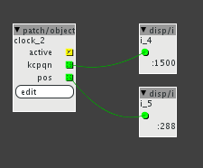

I added some logging to the k-rate code
LogTextMessage("count %d _pos %d", _count, _pos);
Which resulted in the following:
...
count 1365 _pos 22
count 1366 _pos 23
count 1367 _pos 23
count 1368 _pos 23
count 1369 _pos 23
count 1370 _pos 23
count 1371 _pos 23
count 1372 _pos 23
count 1373 _pos 23
count 1374 _pos 23
count 1375 _pos 23
count 1376 _pos 23
count 1377 _pos 23
count 1378 _pos 23
count 1379 _pos 23
count 1380 _pos 23
count 1381 _pos 23
count 1382 _pos 23
count 1383 _pos 23
count 1384 _pos 23
count 1385 _pos 23
count 1386 _pos 23
count 1387 _pos 23
count 1388 _pos 23
count 1389 _pos 23
count 1390 _pos 23
count 1391 _pos 23
count 1392 _pos 23
count 1393 _pos 23
count 1394 _pos 23
count 1395 _pos 23
count 1396 _pos 23
count 1397 _pos 23
count 1398 _pos 23
count 1399 _pos 23
count 1400 _pos 23
count 1401 _pos 23
count 1402 _pos 23
count 1403 _pos 23
count 1404 _pos 23
count 1405 _pos 23
count 1406 _pos 23
count 1407 _pos 23
count 1408 _pos 23
count 1409 _pos 23
count 1410 _pos 23
count 1411 _pos 23
count 1412 _pos 23
count 1413 _pos 23
count 1414 _pos 23
count 1415 _pos 23
count 1416 _pos 23
count 1417 _pos 23
count 1418 _pos 23
count 1419 _pos 23
count 1420 _pos 23
count 1421 _pos 23
count 1422 _pos 23
count 1423 _pos 23
count 1424 _pos 23
count 1425 _pos 23
count 1426 _pos 23
count 1427 _pos 23
count 1428 _pos 24
count 1 _pos 24
count 1 _pos 24
count 1 _pos 24
count 1 _pos 24
count 1 _pos 24
count 1 _pos 24
count 1 _pos 24
count 1 _pos 24
count 1 _pos 24
count 1 _pos 24
count 1 _pos 24
count 1 _pos 24
count 1 _pos 24
count 1 _pos 24
count 1 _pos 24
count 1 _pos 24
count 1 _pos 24
count 1 _pos 24
count 1 _pos 24
count 1 _pos 24
count 1 _pos 24
count 1 _pos 24
count 1 _pos 24
count 1 _pos 24
count 1 _pos 24
count 1 _pos 24
count 1 _pos 24
count 1 _pos 24
count 1 _pos 24
count 1 _pos 24
count 1 _pos 24
count 1 _pos 24
count 1 _pos 24
count 1 _pos 24
count 1 _pos 24
count 1 _pos 24
count 1 _pos 24
count 1 _pos 24
count 1 _pos 24
count 1 _pos 24
count 1 _pos 24
count 1 _pos 24
count 1 _pos 24
count 1 _pos 24
count 1 _pos 24
count 1 _pos 24
count 1 _pos 24
count 1 _pos 24
count 1 _pos 24
count 1 _pos 24
count 1 _pos 24
count 1 _pos 24
count 1 _pos 24
count 1 _pos 24
count 1 _pos 24
count 1 _pos 24
count 1 _pos 24
count 1 _pos 24
count 1 _pos 24
count 1 _pos 24
count 1 _pos 24
count 1 _pos 24
count 1 _pos 24
count 1 _pos 25
...
In other words it seems the MIDI code is being executed at lower rate than the k-rate code (seems to be 64 times lower rate).
Since it's not possible to write to outlets directly from the MIDI code I now set a variable in the MIDI code and assign that variable to the outlet in the k-rate code.
MIDI code:
if (status == MIDI_TIMING_CLOCK) {
_pos_shadow++;
_pos = _pos_shadow;
if (_pos % 24 == 0) {
count = _count;
_count = 0;
}
} else if (status == MIDI_START) {
_active = 1;
_pos = 0;
_pos_shadow = -1;
} else if (status == MIDI_STOP) {
_active = 0;
_pos = -1;
} else if (status == MIDI_CONTINUE) {
_active = 1;
} else if (status == MIDI_SONG_POSITION) {
_pos_shadow = 6*((data2<<7)+data1)-1;
}
k-rate code
outlet_kcpqn = count;
outlet_pos = _pos;
_count += 1;
This seems to produce the result I was looking for:

(my sequencer is set to 120 BPM = 2 Hz, so I'd expect to see 1/2 * 3000 (k-rate) = 1500 and that's what it's showing  )
)
Is this the correct way of doing this? Seems a bit heavy-handed to do the outlet assignment every k-rate cycle when it would be enough to do it every MIDI-rate cycle.